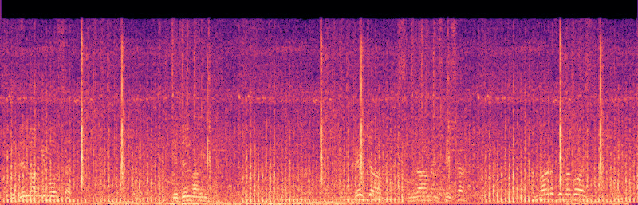
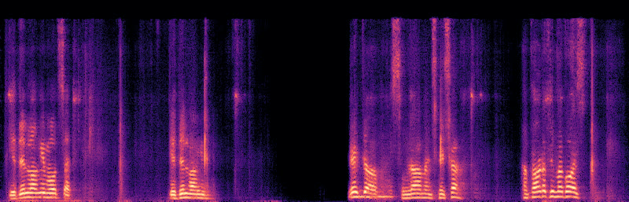
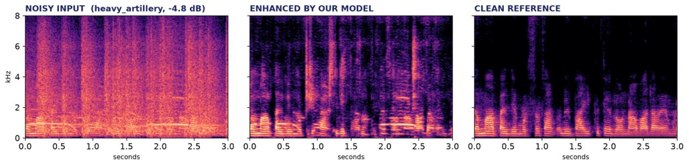
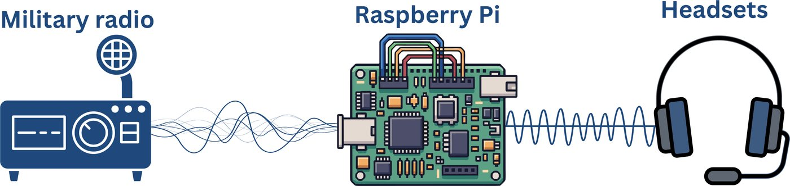

Real-time AI noise cancellation for defence radio. Gunfire, engines and rotor wash are stripped from the channel on a Raspberry Pi 5, so an order is heard the first time.
Recorded on the prototype: a noisy channel going in, the cleaned speech coming out.


In each spectrogram, brightness is loudness at each pitch over time, low pitches at the bottom. Both use one shared scale, so darker really means quieter. Noise fills the whole Noisy input picture; after the model, what is left is the voice (the stacked horizontal lines are its harmonics), with the pauses gone dark. The black strip along the top edge of both is the phone's audio compression, not the model.
Three held-out test recordings joined end to end, so the noise switches from a helicopter louder than the speech itself, to an engine, to rifle fire. None of it was used in training. On this clip PESQ rises from 1.19 to 2.06, one of the best of our eight demo clips; across all eight the gain runs from +0.39 to +0.87.
Prototype figures, not final ones. The ceiling above them is already measured at PESQ 3.389. Ahead of DeepFilterNet v0.5.6 on the same held-out set, on all three metrics.


Ahead of DeepFilterNet v0.5.6 on our own 125-clip held-out set, on PESQ, STOI and SI-SNR at once.
The two-stage model runs on a Raspberry Pi 5 at 69.7 ms per 100 ms chunk, int8, no GPU.
36 logged training runs. Two changes moved quality: a perceptual loss, and an additive second stage that restores what a mask removes.
DCCRN, toward the PESQ 3.389 ceiling our ideal-mask test measured.